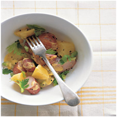

Rutabaga and Potato Salad

Ingredients
• 1 rutabaga (about 1 pound), peeled and cut into chunks
• 1 pound red new potatoes, scrubbed, halved, or quartered (the same size as cut rutabaga)
• 2 tablespoons white-wine vinegar
• 1 tablespoon Dijon mustard
• Coarse salt and ground pepper
• 2 tablespoons olive oil
• 2 ribs celery, halved lengthwise and sliced crosswise plus 1/4 cup coarsely chopped celery leaves
Directions
1. Set a steamer basket in a large saucepan.
Fill with enough water to come just below basket.
Bring to a boil; place rutabaga in basket, and reduce heat to medium.
Cover and steam 5 minutes.
Add potatoes, cover, and steam until vegetables are just tender, about 15 minutes.
2. Meanwhile, in a large bowl, whisk together vinegar and Dijon; season with salt and pepper.
When potatoes are cooked, transfer to bowl with vinegar mixture.
Toss to combine; let cool, tossing occasionally.
3. When potato mixture is cool, mix in oil, celery, and celery leaves; season with salt and pepper.